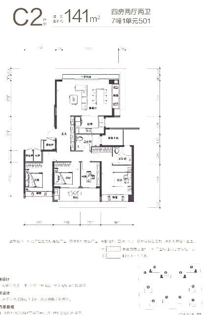
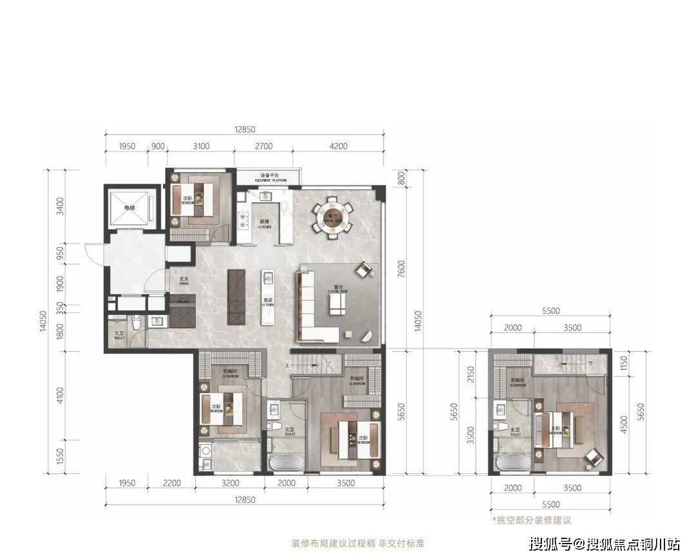
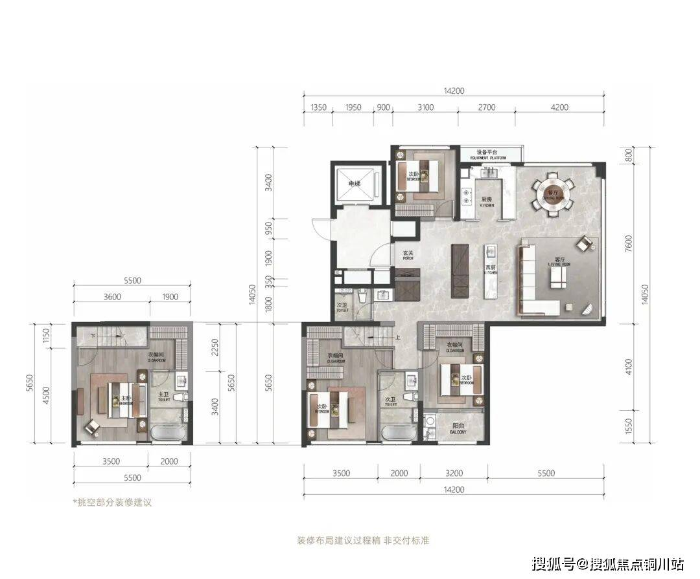
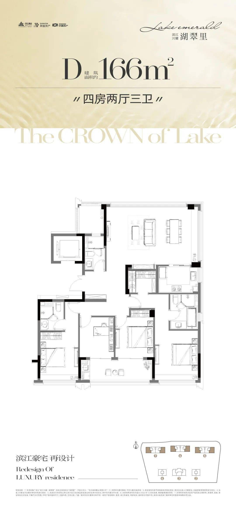
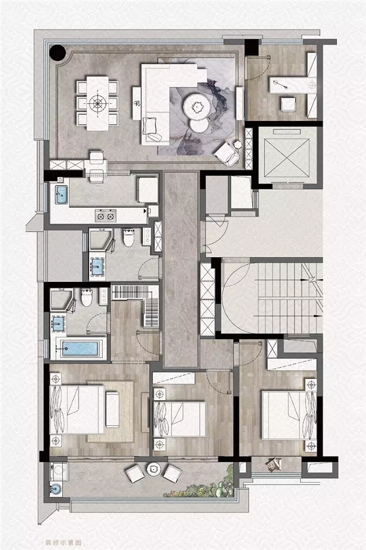
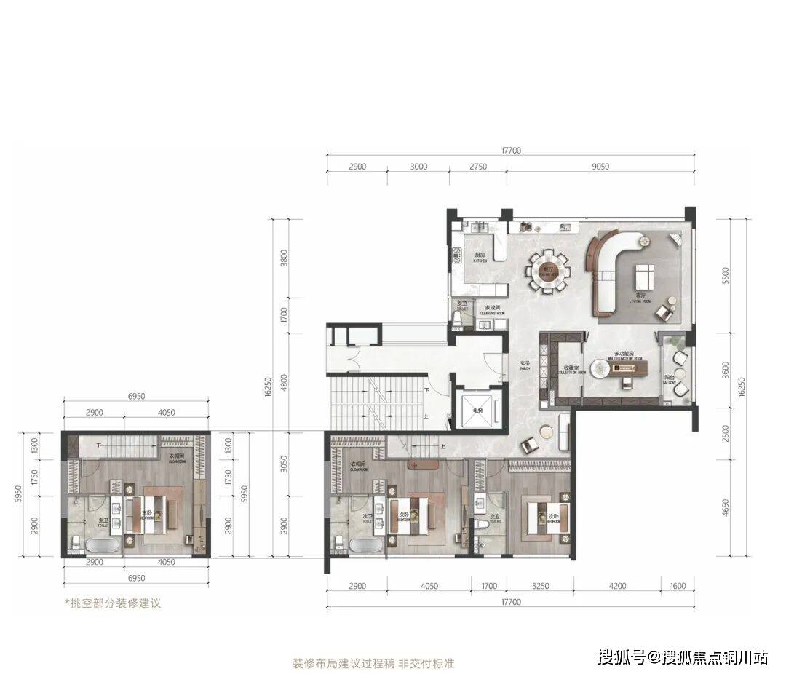
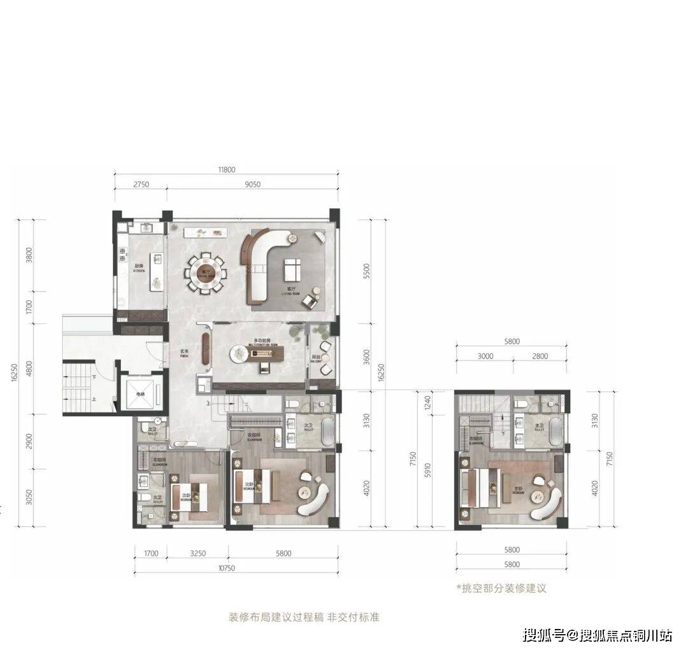

北厅户型（项目北侧衢江江景）
结论
- 事实北厅案例同样执行“已证实一梯两户/两梯两户”的标准。北厅案例共 9 例、9 张户型图：140–150 段 4、155–170 段 3、185 段 2；其中只有 N1 已证实两梯两户，N2–N9 梯户比标为未核实（按本轮“可放宽”的要求收录）。120 / 130 段 0。
- 推断北厅在江浙沪是少数派：大多数项目宁可放弃北侧景观，也要保客厅朝南。只有“北侧一线江/湖”的楼栋会做北厅，常见做法是“四房朝南 + 北向转角大厅”，面积多在 140㎡ 以上。
- 建议龙游北侧临衢江，建议只在北排一线楼栋做北厅版本：卧室全部朝南保日照，客餐厅一体放北侧，用转角窗或通高玻璃面向江面，面宽≥7m（参照 N1 及线索 N4/N5 建发望江 143 的约 11m 江景面）。南排楼栋仍用 J1–J7 的南厅户型。
- 建议需要关注：北厅冬季没有日照，要靠南侧卧室和阳台补；北向大玻璃要做好保温（参照浙江节能要求）；江面西晒和眩光可用转角挑檐处理。
140–150㎡ 段（4 例，新增）
N2 · 滨江·春风金沙 C1-141（杭州钱塘·金沙湖）
| 年份 | 2019 设计 / 2023 竣工 | 面积 | 约141㎡ |
|---|---|---|---|
| 房型 | 北向宽厅 + 卧室朝南（7幢2单元501，按图） | ||
| 梯户 | 未核实 梯户比未核实（楼盘为高端改善，暂按“可能”收录） | ||
| 得房率 | 事实看房网标注 84%（含赠送），套内约 118㎡ | ||
亮点：北侧湖景宽厅、一步阳台。事实ARCHINA 写明“沿湖楼栋户型采用北向宽厅设计，住户享有北侧湖景与南侧花园”（goa 设计，2019 设计 / 2023 竣工，ARCHINA）

N3 · 滨江·春风金沙 C2-141（杭州钱塘·金沙湖）
| 年份 | 2019 设计 / 2023 竣工 | 面积 | 约141㎡ |
|---|---|---|---|
| 房型 | 北向宽厅 + 卧室朝南（7幢1单元501） | ||
| 梯户 | 未核实 梯户比未核实 | ||
| 得房率 | 事实看房网标注 82%（含赠送），套内约 115.6㎡ | ||
亮点：与 C1 镜像/边套变体。事实ARCHINA 写明“沿湖楼栋户型采用北向宽厅设计，住户享有北侧湖景与南侧花园”（goa 设计，2019 设计 / 2023 竣工，ARCHINA）

N4 · 建发·望江 143㎡ B 户型（温州滨江CBD·瓯江）
| 年份 | 2025–2026 在售 | 面积 | 约143㎡ |
|---|---|---|---|
| 房型 | 四室两厅三卫，北侧瞰景方厅，南向双主套 | ||
| 梯户 | 未核实 官网称“T2 改善”，单元梯户比未核实 | ||
| 得房率 | 未知文中“约113%利用率”是含赠送的使用率，不是得房率 | ||
亮点：事实文中写“东南北三面瞰瓯江”“约 270° 环幕观景”（搜狐 2026-04-21）；约 11m 一线江景面、中西双厨。

图来源：https://www.sohu.com/a/1012271524_121680073（2026-04-21）
N5 · 建发·望江 143㎡ D 户型（温州滨江CBD·瓯江）
| 年份 | 2025–2026 在售 | 面积 | 约143㎡ |
|---|---|---|---|
| 房型 | 四室两厅三卫，北侧转角方厅，南向双主套 | ||
| 梯户 | 未核实 同上 | ||
| 得房率 | 未知（约113%为使用率） | ||
亮点：事实文中写“东南北三面瞰瓯江”“约 270° 环幕观景”（搜狐 2026-04-21）；约 270° 转角观江。

155–170㎡ 段（3 例：N1 + 2 例新增）
N1 · 滨江·湖翠里 D-166（杭州钱塘·金沙湖）
| 年份 | 2023（早于 2024–2026 偏好，作参考） | 面积 | 约166㎡ |
|---|---|---|---|
| 房型 | 四房两厅三卫，北厅 + 四开间朝南 | ||
| 梯户 | 事实项目 5 幢均为两梯两户；北侧沿湖只布置 138㎡ 和 166㎡（搜狐 2023-02） | ||
| 得房率 | 事实看房网标注约 85%（含赠送），套内约 141.8㎡ | ||
亮点：客餐厅放在北侧转角，正面朝金沙湖；四个卧室全部朝南；位于 6 号楼东西边套，评测建议选东边套、7–8 层以上（房叔跑盘 No.119）。
为什么适合北侧江景：推断这是“卧室朝南拿日照、客厅朝北拿景”的标准解法，和龙游北临衢江的条件一致，可以直接作为北排楼栋的原型。

图来源：https://www.sohu.com/a/635511927_667411（2023-02）；同文 C-138 为南厅，B1-130 为中厅，所以没有收录
N6 · 新希望·玉锦麟 159㎡（温州·瓯江）
| 年份 | 约 2020 物料 | 面积 | 约159㎡ |
|---|---|---|---|
| 房型 | 三房（图示）+ 北侧客餐厅一体，卧室朝南 | ||
| 梯户 | 未核实 梯户比未核实（图中一梯可见一部电梯 + 楼梯，非完整核心筒） | ||
| 得房率 | 未知 | ||
亮点：事实吉屋写“北面餐厅、客厅观景设计”（吉屋）；面宽约 9.8m（网易）。

N7 · 滨江·春风金沙 D-165（杭州钱塘·金沙湖）
| 年份 | 2019 设计 / 2023 竣工 | 面积 | 约165㎡ |
|---|---|---|---|
| 房型 | 北向宽厅 + 卧室朝南（7幢2单元502） | ||
| 梯户 | 未核实 梯户比未核实 | ||
| 得房率 | 事实看房网标注 80%（含赠送），套内约 132.4㎡ | ||
亮点：北侧湖景宽厅，客厅 270° L 形转角窗。事实ARCHINA 写明“沿湖楼栋户型采用北向宽厅设计，住户享有北侧湖景与南侧花园”（goa 设计，2019 设计 / 2023 竣工，ARCHINA）

185㎡ 段（2 例，超出段位，作大户参考）
N8 · 建发·望江 185㎡ A 户型
| 年份 | 2025–2026 在售 | 面积 | 约185㎡ |
|---|---|---|---|
| 房型 | 四室两厅四卫，北侧环幕大厅，南向三套卧 | ||
| 梯户 | 未核实 | ||
| 得房率 | 未知 | ||
亮点：事实文中写“东南北三面瞰瓯江”“约 270° 环幕观景”（搜狐 2026-04-21）；约 100㎡ LDK。

N9 · 建发·望江 185㎡ B 户型
| 年份 | 2025–2026 在售 | 面积 | 约185㎡ |
|---|---|---|---|
| 房型 | 四室两厅四卫，北侧环幕大厅，南向三套卧 | ||
| 梯户 | 未核实 | ||
| 得房率 | 未知 | ||
亮点：事实文中写“东南北三面瞰瓯江”“约 270° 环幕观景”（搜狐 2026-04-21）。

120 / 130㎡ 段（0 例）
仍没有找到北厅合格案例。
线索（未通过：梯户比未核实、年份偏早或缺图）
| 编号 | 项目/户型 | 城市 | 北厅/江景要点 | 为什么未收录 |
|---|---|---|---|---|
| L1 | 中铁建·西派澜廷 127㎡（2025 首开） | 温州鹿城·一线瓯江 | 事实北厅约48㎡，面宽7.35m，三卧朝南（网易 2025） | 项目只写“高梯户比”（温州楼盘网），未核实具体梯户；网易图片被剥离。130 段最接近的一条线索 |
| L3 | 华鸿·天悦外滩 143㎡（E2/E6） | 台州椒江 | 事实朝南三卧，一体化餐客北厅，双联瞰景阳台（台州城市网 2025-04-29） | 梯户比未核实；项目首开约 2021 |
| L5 | 旭辉·铂悦犀湖 185㎡ | 苏州独墅湖 | 事实高层北厅观湖，卧室朝南，8m 湖景露台（ARCHINA） | 2018 年，面积超出段位，只作设计理念参考 |
建议L1 和 L3 可以让当地渠道或售楼处补问梯户比和户型图，核实后升为正式案例。